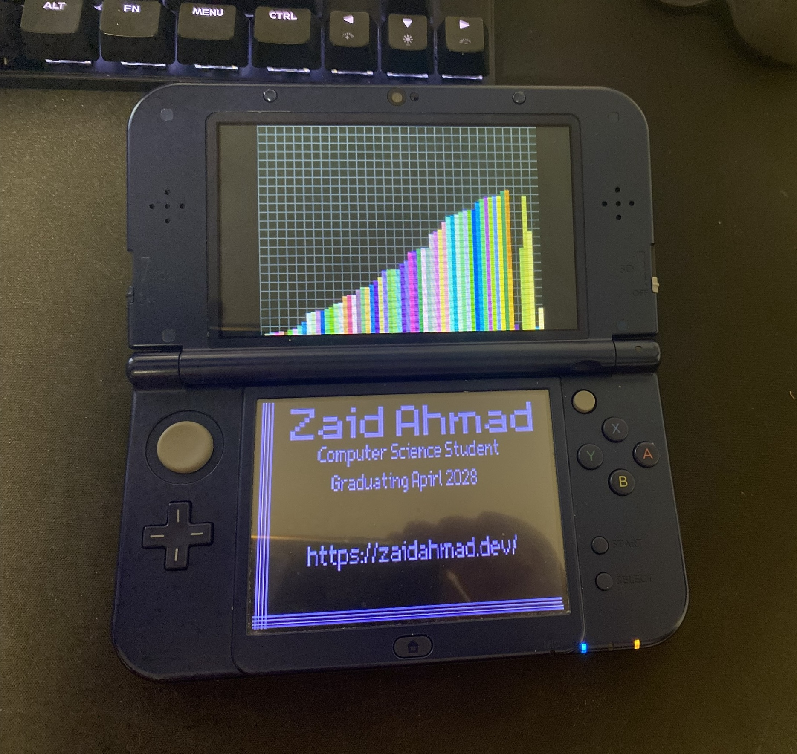

My business card is a Nintendo DS cartridge. Plug it in, play a short game, find my contact info at the end. Pure C — no game engine, no operating system.
View on GitHub ↗
Built against the NDS SDK targeting bare-metal ARM9/ARM7. No OS, no game engine — just direct hardware register access. The top screen runs an animated sequence; the bottom shows contact info.
Works on any DS or DS Lite with a flash cart. Hand someone the cartridge and they plug it in like a regular game. The dual-processor setup (ARM9 for main logic, ARM7 for audio and wifi) is managed entirely in C with no abstraction layer.